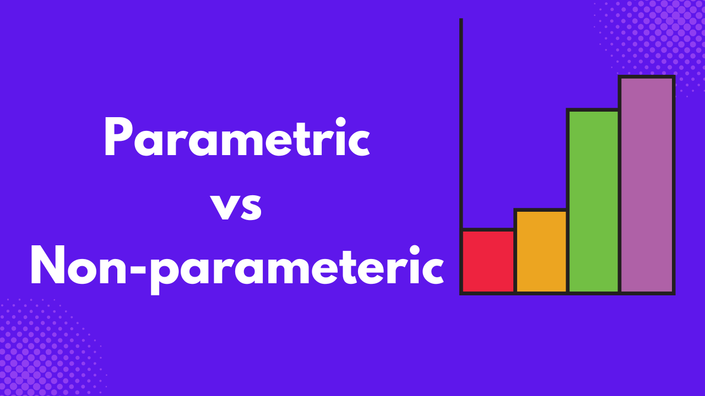

Data comes in various forms, and understanding the structure of your data helps you select the most suitable methodology for your analysis.
For example, you collected data on income from 10,000 samples from two different countries: Country A and Country B.
Country A is a country where most individuals in the sample fall within the average income category, whereas in Country B, most individuals are in the low-income category.
If you are to plot a histogram of Country A incomes, you will find out that it is normally distributed, while Country B is skewed to the left.
If you are to calculate the difference in income between genders, the statistical methodology for Country A would be different from Country B, due to the distribution of the income variable.
These differences are why we have parametric and non-parametric statistical techniques, and this is what you will learn in this article.
What are Parametric Statistics
Parametric statistics is a branch of statistics that assumes the data follows an underlying population distribution, usually the normal distribution.
It uses parameters such as the mean, standard deviation, variance, and correlation, among others, to make inferences about the population.
Key assumptions
These are the assumptions your data have to meet for you to use parametric statistics:
- Normality: The data should be approximately normally distributed. When the density plot is plotted, it should have a bell-shaped curve.
- Equal Variance: Parametric statistics expect the data to have equal variances. For example, if you want to compare men’s vs women’s reaction times with a t-test, both groups should have a similar spread in reaction times.
- Independence of Observations: Each observation should not depend on another observation. For example, in a drug trial, one patient’s response should not affect another patient’s response.
- Scale of Measurement: The data used should be on a quantitative scale, either interval or ratio. You can’t use parametric statistics for data that are categorical in nature.
- Random Sampling: Data is obtained from a random sample of a population to ensure the results can be generalized. If you want to know the average blood pressure in a city, you shouldn’t just pick the patients from one clinic, but pick randomly from different clinics across the city.

Examples
There are various examples of parametric tests, some of which are:
- t-test: Also known as the Student t-test, is used when you are interested in comparing two groups. For example, a pharmaceutical company who are interested in knowing if a new painkiller works better than the standard one.
- ANOVA: The Analysis of Variance (ANOVA) is used to compare three or more groups. For example, a teacher wants to compare four different teaching methods and see if they lead to the same exam score.
- Pearson Correlation: This is one of the various types of correlation in statistics, used to test the strength and relationship between two variables. For example, a researcher wants to test the relationship between income and education.
- Z-test: Mostly used in quality control to see if the sample mean equals the population mean. For example, a manufacturing company interested in determining if light bulbs are supposed to last 1,000 hours on average, randomly tests 50 bulbs and compares the sample mean to 1,000 hours.

Advantages
Parametric statistics are widely used in research due to the advantages they offer, some of which are:
- More Statistical Power: They tend to detect a real effect if it exists. A medical researcher using a t-test to check if a new drug lowers blood pressure will have a better chance of detecting a real improvement by using parametric statistics.
- Ability to Estimate Parameters: They provide estimates of population characteristics like mean, variance, and standard deviation. A factory doesn’t just want to know if bulbs differ; it also wants to know the average lifespan and the spread, which is one of the use cases of parametric statistics.
- Wider Range of Tests Available: There are a lot of parametric tests covering both simple and complex scenarios, giving researchers many tools to work with and compare.
- Flexibility and Efficiency with Large Samples: With larger datasets, parametric methods handle data efficiently, and assumptions are less strict due to the central limit theorem.
- Results are Easier to Interpret: The outputs of parametric tests are intuitive and directly tied to real-world quantities.
What are Non-Parametric Statistics?
Unlike parametric statistics, non-parametric statistics do not rely on assumptions about the population distribution. They do not require the data to follow a normal distribution.
Instead of estimating parameters like means and variances, non-parametric statistics rely on medians, ranks, or counts.
They come in handy when the data is skewed, categorical, or has a small sample size

Image generated by Nano Banana.
Key assumptions
Here is what your data needs to have for applying non-parametric statistics.
- Independence of Observations: Just like parametric statistics, non-parametric statistics also expect the observations to be independent of each other.
- Appropriate Measurement Scale: Non-parametric statistics can handle data that is on either an interval, ratio, or ordinal scale.
- Random Sampling: Non-parametric statistics expect the data to come randomly from a population, just like parametric statistics.
Examples
Most of the tests under parametric statistics have their non-parametric alternatives, in case the data you want to apply it to violates any of the parametric assumptions.
- Mann-Whitney U Test: This is an alternative to the independent t-test, and is used to compare two groups when the data is not normally distributed. For example, comparing the customer satisfaction ratings between two restaurants.
- Wilcoxon Signed-Rank Test: A non-parametric alternative to the paired t-test that compares two related samples. For example, measuring stress levels before and after yoga sessions, if the data is skewed.
- Kruskal-Wallis Test: Non-parametric alternative to the ANOVA for comparing three or more groups without assuming normality. An example is comparing median waiting times across three banks.
- Spearman’s Rank Correlation: Measures association based on ranks and not raw values. It’s an alternative to Pearson’s Correlation Coefficient.
- Chi-Square Test: It is used to test the relationship between two categorical variables. For example, testing if gender is related to preferred smartphone brand.
Advantages
- Fewer Assumptions: Non-parametric statistics are suitable when the data is not normal, skewed, or ordinal. Customer satisfaction surveys often use ranks or ratings, which are perfect for non-parametric statistics.
- Suitable for Small Samples: When you don’t have sufficient data to check for normality, you can use the non-parametric tests to analyze your data.
- Not Affected by Outliers: Means are sensitive to outliers, which makes any data with outliers not a good fit for parametric statistics. Non-parametric statistics use the median because they are more robust. For example, income data where a few billionaires distort the mean is better analyzed with medians.
- Work with different data types: You can use non-parametric statistics to analyze different types of data, such as interval, ratio, and ordinal.
Key Differences
The following table summarizes the major differences between the parametric and non-parametric statistics.
| Aspect | Parametric | Non-Parametric |
|---|---|---|
| Assumptions | Requires normal distribution & equality of variance | Minimal assumptions about data |
| Data Type | Interval/ratio | Ordinal, nominal, or non-normal data |
| Examples | t-test, ANOVA, Pearson correlation | Mann-Whitney U, Kruskal-Wallis, Spearman correlation |
| Power | More powerful if assumptions are met | Less powerful but more flexible |
When to Use Which
A medical researcher interested in comparing the response of patients to a new intervention when compared to an old one might not have sufficient samples for the study.
In such a case, the best alternative is to go for a non-parametric test. Many such cases researchers face, which is one of the reasons for the development of non-parametric statistics.
Although non-parametric statistics are not as strong as their parametric counterparts, they are useful in situations where the assumptions of parametric statistics are not met.
Almost all parametric tests have their non-parametric counterparts, and the image below summarizes when to use them.

Conclusion
Many researchers, when analyzing their data, fail to check for the assumptions of the statistical test they use on their data, which can lead to wrong results.
These assumptions serve as a guide to determine the right statistical test to use based on the characteristics of the data.
Although parametric tests are strict, non-parametric tests are flexible and are usually considered the last option when the data fails to meet the assumptions of parametric tests.
Understanding the differences between parametric and non-parametric will ensure you achieve realistic results, making a lot of difference in your analysis.
Need Help with Data? Let’s Make It Simple.
At LearnData.xyz, we’re here to help you solve tough data challenges and make sense of your numbers. Whether you need custom data science solutions or hands-on training to upskill your team, we’ve got your back.
📧 Shoot us an email at admin@learndata.xyz—let’s chat about how we can help you make smarter decisions with your data.